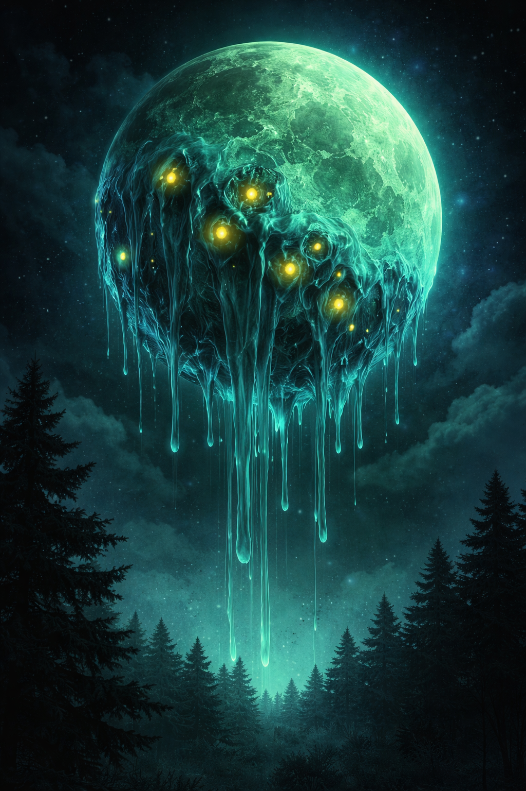
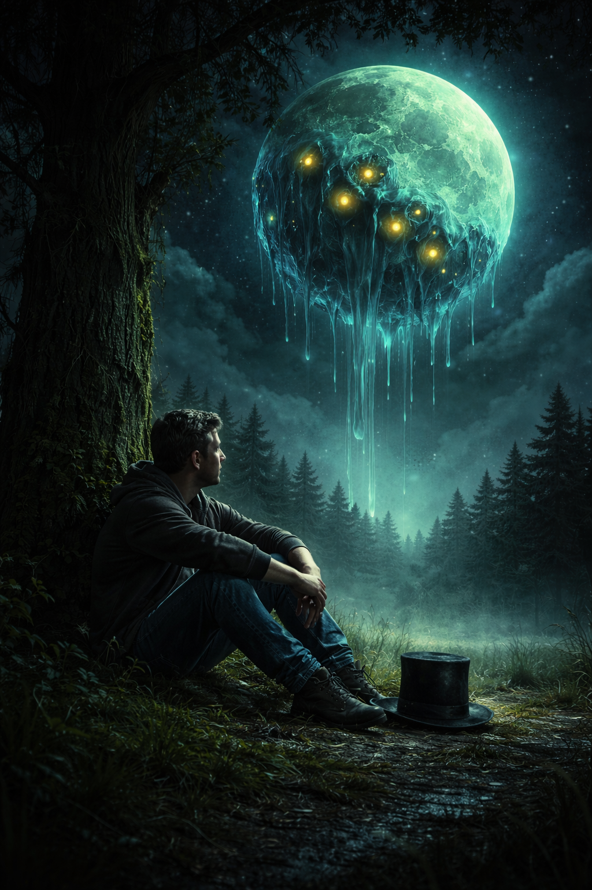

One night, something strange happened...

The moon turned green. At first, I thought it was my eyes—some trick from staring too long at the same things—but when I looked outside, the color was real. A sick, glowing green hung in the sky where the moon should have been.
Then it began to change.
Thick blue ooze spread across its surface, slow and heavy, as if the moon itself were melting.
Inside the ooze, yellow lights flickered—uneven, watching. Not shining… watching.
The ground beneath me trembled. It started as a low vibration, then grew into something deeper, like the earth was shifting in its sleep. My skin prickled, sharp and constant, as if the air had turned against me—like invisible needles pressing in from every direction.
I forced myself to stand.
I don’t know why I looked back at the moon. Some part of me knew I shouldn’t. But I did.
The blue ooze shifted.
Then it spoke.
“Small human,” the voice said, stretching across the sky, low and distant but impossibly clear, “you have something that belongs to me.”
My throat tightened. I hadn’t moved anything. I hadn’t taken anything. I barely left the house most days. “I don’t have anything,” I said, though my voice barely made it past my lips.
The yellow lights flickered.
“Look,” it said.
I followed its gaze.
Beneath the cypress tree I’d been staring at all day—without really knowing why—something sat in the grass.
A hat. Simple. Dark. Still.
I hadn’t noticed it before.
The shaking grew stronger. The branches of the tree rattled softly, though there was no wind. The hat didn’t move.
“Return it,” the moon said. There was no threat in its voice. That made it worse.
I stepped outside. Each step felt wrong, like I was walking through something thicker than air. The closer I got to the tree, the quieter everything became. The shaking faded. The night held its breath. I reached the hat.
Up close, it didn’t look strange at all. Just worn. Slightly dusty. Like it had been waiting.
I hesitated.
“What happens if I don’t?” I asked.
For a moment, nothing answered. Then the sky dimmed. The green deepened. The blue ooze thickened. The yellow lights blinked slowly, all at once. “You already know,” it said.
I picked up the hat. It was lighter than it should have been.
For a second, everything stopped—the ground, the air, even the feeling in my skin. Silence pressed in from all sides.
“Now,” the moon said.
I looked up. The distance between us didn’t make sense anymore. The sky felt closer. Or maybe I was farther away from everything else.
I lifted the hat. The moment I did, the world snapped back. The shaking stopped. The air cleared. The moon returned to its place—silent, pale, and ordinary. No green. No ooze. No voice. Just the night.
I stood there for a long time, the hat still in my hands. Then, slowly, I looked back at my house. Everything inside was quiet. Unchanged. Except for one thing. There was something new. I didn’t remember it being there before. At the center, in plain text, it read: “The Boy Who Found the Moon’s Hat.”

And that’s where everything changed.